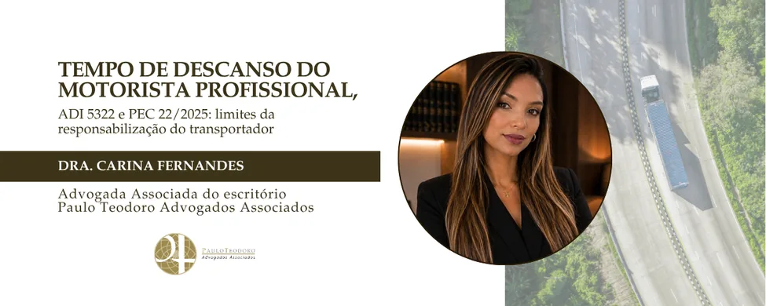

Tempo de descanso do motorista profissional, ADI 5322 e PEC 22/2025: limites da responsabilização do transportador
O presente artigo analisa os fundamentos da Proposta de Emenda à Constituição nº 22/2025, aprovada pelo Senado Federal, que representa significativo avanço no tratamento jurídico conferido à atividade de transporte rodoviário profissional. A proposta reconhece a impossibilidade de aplicação de penalidades ao motorista profissional pelo descumprimento do tempo legal de descanso quando inexistente infraestrutura adequada nas rodovias, enfrentando problema histórico decorrente da dissociação entre a exigência normativa e as condições materiais de sua execução. A análise é desenvolvida em consonância com a recente orientação jurisprudencial dos tribunais superiores, especialmente sob a ótica dos princípios da razoabilidade, da proporcionalidade e da segurança jurídica, os quais impedem a imposição de sanções quando o cumprimento da obrigação se mostra materialmente inviável.
Este artigo analisa os fundamentos da proposta, conectando-os à recente e decisiva jurisprudência do Supremo Tribunal Federal, especialmente na ADI 5322, que reforçou a proteção ao descanso como um direito fundamental à saúde do trabalhador.
Argumenta-se que a responsabilização do transportador deve ser analisada sob a ótica dos princípios da razoabilidade e da segurança jurídica, considerando tanto a omissão estatal na infraestrutura quanto os parâmetros de proteção definidos pela Suprema Corte.
O transporte rodoviário de cargas constitui um dos principais pilares da economia nacional, sendo responsável pela maior parte da circulação de mercadorias no território brasileiro. Não obstante sua relevância estratégica, a atividade revela constante tensão entre a disciplina normativa e as condições reais de sua execução, especialmente no que se refere ao cumprimento das regras relativas à jornada e ao descanso do motorista profissional. Nesse contexto, a aprovação da Proposta de Emenda à Constituição nº 22/2025 pelo Senado Federal, em 24 de fevereiro de 2026, representa marco relevante ao estabelecer que não haverá penalidade pelo descumprimento do tempo de descanso legal enquanto inexistirem pontos de parada e repouso adequados nas rodovias.
A proposta prevê, ainda, a instituição de política nacional voltada ao apoio da atividade de transporte rodoviário profissional, atribuindo ao poder público o dever de promover, diretamente ou em cooperação com a iniciativa privada, a implementação de infraestrutura mínima destinada ao repouso seguro dos condutores. Trata-se de medida que busca adequar a exigência legal às condições concretas do exercício da atividade, evitando a imposição de sanções em cenário de manifesta insuficiência estrutural.
O presente estudo examina os fundamentos da referida proposta à luz da interpretação conferida pelo Supremo Tribunal Federal em julgamentos recentes sobre a matéria, nos quais se tem buscado compatibilizar a proteção à saúde e à segurança do trabalhador com a necessidade de preservação da viabilidade econômica do transporte rodoviário, mediante aplicação dos princípios da razoabilidade, da proporcionalidade e da segurança jurídica.
A Lei nº 13.103/2015, denominada Lei do Motorista, foi instituída com a finalidade de disciplinar a jornada de trabalho do condutor profissional, fixando limites de direção contínua e períodos obrigatórios de descanso, com vistas à preservação da saúde do trabalhador e à promoção da segurança no trânsito. Apesar da inequívoca finalidade protetiva da norma, sua aplicação prática sempre esteve condicionada à existência de infraestrutura rodoviária compatível com as exigências legais, o que, na realidade brasileira, mostra-se frequentemente insuficiente.
A ausência de locais adequados para parada e repouso acabou por gerar cenário de reiterada insegurança jurídica, na medida em que se passou a atribuir ao motorista e às empresas transportadoras o descumprimento de obrigações cujo atendimento depende, em grande parte, de providências estruturais que incumbem ao próprio Estado.
A relevância do descanso efetivo como garantia fundamental do trabalhador foi reafirmada pelo Supremo Tribunal Federal no julgamento da Ação Direta de Inconstitucionalidade nº 5322, ocasião em que a Corte declarou a inconstitucionalidade de diversos dispositivos da Lei nº 13.103/2015 que admitiam flexibilizações incompatíveis com a proteção constitucional à saúde e à segurança. O Tribunal entendeu que normas que autorizavam o fracionamento do descanso interjornadas, bem como aquelas que permitiam o repouso do motorista com o veículo em movimento, não asseguravam recuperação física e mental adequada, comprometendo a dignidade do trabalhador e elevando o risco à segurança viária, razão pela qual foram consideradas incompatíveis com o artigo 7º, da Constituição Federal.
Para o Supremo Tribunal Federal, tais previsões normativas violam os direitos fundamentais à saúde e à segurança do trabalhador, assegurados pelo artigo 7º, da Constituição Federal, na medida em que não garantem descanso efetivamente reparador, indispensável à preservação da integridade física e mental do motorista profissional. A decisão da Suprema Corte evidencia que o repouso não pode ser tratado como mera formalidade legal, mas como exigência de natureza fisiológica e de segurança coletiva, cuja efetividade depende da existência de condições materiais adequadas para sua realização.
Nesse contexto, a Proposta de Emenda à Constituição nº 22/2025 traduz, no plano normativo, a aplicação do princípio segundo o qual ninguém pode ser compelido ao cumprimento de obrigação impossível. A exigência de observância integral dos períodos de descanso, sem que haja locais apropriados e seguros para sua fruição, revela-se incompatível com os postulados da razoabilidade e da proporcionalidade, pois impõe ao motorista e às empresas transportadoras ônus decorrente da insuficiência de infraestrutura cuja implementação compete ao Poder Público.
A responsabilização automática das empresas transportadoras, nesse contexto, configura indevida transferência ao particular de obrigação que, por sua natureza, compete ao Estado, qual seja, a disponibilização de infraestrutura mínima capaz de viabilizar o cumprimento das exigências legais relativas ao descanso do motorista profissional. Ao condicionar a aplicação de penalidades à existência de condições materiais adequadas, a Proposta de Emenda à Constituição nº 22/2025 harmoniza-se com a orientação firmada pelo Supremo Tribunal Federal, que, no julgamento da ADI nº 5322, reafirmou a necessidade de interpretação das normas trabalhistas em conformidade com a proteção constitucional à saúde, à segurança e à dignidade do trabalhador.
Na mesma decisão, a Suprema Corte declarou a inconstitucionalidade de dispositivos que excluíam o denominado tempo de espera da jornada de trabalho, assentando que todo período em que o empregado permanece à disposição do empregador deve ser considerado como tempo de serviço, para todos os efeitos legais. Tal entendimento reforça a premissa de que a disciplina da jornada do motorista profissional deve ser interpretada de forma sistemática e coerente com a Constituição Federal, não se admitindo flexibilizações que comprometam a proteção do trabalhador, nem tampouco a imposição de responsabilidades ao empregador por circunstâncias decorrentes de omissão estatal.
A consolidação da diretriz estabelecida pela Proposta de Emenda à Constituição nº 22/2025, em conjunto com a orientação firmada pelo Supremo Tribunal Federal, tende a produzir relevantes reflexos na interpretação das normas aplicáveis ao transporte rodoviário profissional. No âmbito das demandas trabalhistas, a análise do alegado descumprimento dos intervalos legais deverá considerar, de forma mais rigorosa, as circunstâncias concretas da atividade, especialmente as condições reais das rotas percorridas e a efetiva existência de locais adequados para parada e descanso, não se mostrando juridicamente admissível a responsabilização automática do empregador diante de limitações estruturais alheias à sua vontade.
Não se revela juridicamente sustentável imputar ao transportador a responsabilidade por descumprimento de obrigação cujo adimplemento depende de condições estruturais que incumbem ao próprio Estado assegurar. A deficiência histórica da infraestrutura rodoviária nacional constitui fator externo à esfera de controle do empregador, razão pela qual a responsabilização automática da empresa, nessas hipóteses, afronta os princípios da razoabilidade, da proporcionalidade e da vedação ao excesso. Tal compreensão se reforça diante da orientação firmada pelo Supremo Tribunal Federal, que estabeleceu elevado padrão de proteção ao direito ao descanso do motorista profissional, evidenciando que a efetividade dessa garantia pressupõe a existência de condições materiais mínimas para sua concretização.
Nesse contexto, torna-se ainda mais evidente o nexo entre a ausência de locais adequados de parada e a impossibilidade de cumprimento integral da norma.
Sob a mesma perspectiva, a imposição de penalidades administrativas em hipóteses nas quais inexistem pontos de parada e descanso compatíveis com as exigências legais deve ser objeto de criteriosa revisão, sob pena de aplicação de sanções desproporcionais e incompatíveis com a interpretação constitucional da matéria. Não se mostra juridicamente admissível transferir ao particular o ônus decorrente de omissão estatal na disponibilização de infraestrutura indispensável ao exercício regular da atividade de transporte rodoviário, sobretudo quando o cumprimento da norma depende de condições que escapam à esfera de atuação do transportador.
Nesse contexto, a aprovação da Proposta de Emenda à Constituição nº 22/2025, em consonância com a orientação firmada pelo Supremo Tribunal Federal no julgamento da ADI nº 5322, representa avanço significativo na construção de um modelo normativo mais coerente com a realidade do setor. Ao reconhecer que a efetividade do direito ao descanso pressupõe a existência de condições materiais adequadas, o ordenamento jurídico passa a adotar solução mais equilibrada, compatibilizando a proteção ao trabalhador, a viabilidade da atividade econômica e a responsabilidade do Estado pela organização da infraestrutura rodoviária.
A consolidação dessa diretriz no texto constitucional tende a proporcionar maior equilíbrio e previsibilidade às relações jurídicas no setor de transporte rodoviário, reduzindo a insegurança decorrente da aplicação de normas dissociadas da realidade estrutural das rodovias brasileiras. A expectativa é que a Câmara dos Deputados confirme a proposta, de modo a harmonizar a proteção à saúde e à segurança do trabalhador com a viabilidade econômica da atividade e com a responsabilidade estatal pela implementação de infraestrutura adequada, em conformidade com os parâmetros já delineados pela jurisprudência do Supremo Tribunal Federal.
Nesse novo cenário normativo, a Proposta de Emenda à Constituição nº 22/2025 apresenta-se como instrumento de equilíbrio indispensável, não para afastar as obrigações impostas pela interpretação constitucional conferida pela Suprema Corte, mas para estabelecer hipótese de inexigibilidade de conduta quando o cumprimento da norma se torna inviável em razão de omissão estatal.
Trata-se de solução normativa que preserva a tutela da saúde e da segurança do trabalhador sem impor às empresas transportadoras responsabilização por circunstâncias que não se inserem em sua esfera de atuação ou de controle, especialmente quando decorrentes de deficiência estrutural atribuível ao próprio Estado. Não se revela juridicamente admissível exigir do empregador o cumprimento integral de obrigações legais cuja execução depende da prévia disponibilização, pelo Poder Público, de infraestrutura adequada e suficiente. A interpretação que se consolida, portanto, orienta-se pelos princípios da razoabilidade, da proporcionalidade e da vedação à responsabilização por fato impossível, evitando a indevida transferência ao particular de encargos decorrentes de omissão estatal e assegurando maior coerência entre a norma jurídica e as condições concretas em que se desenvolve a atividade de transporte rodoviário profissional.
Como consequência, projeta-se a formação de ambiente de maior segurança jurídica e estabilidade nas relações do setor, no qual as empresas permanecem submetidas a rigorosos parâmetros de proteção ao descanso do motorista profissional, mas passam a contar com salvaguarda legítima contra a responsabilização decorrente de falhas estruturais atribuíveis ao Poder Público. A adequada distribuição de responsabilidades entre Estado, empregadores e trabalhadores contribui para a construção de modelo regulatório mais justo, previsível e compatível com a realidade operacional do transporte rodoviário no país.
A evolução normativa representada pela Proposta de Emenda à Constituição nº 22/2025 revela importante movimento de adequação do ordenamento jurídico às condições concretas em que se desenvolve a atividade de transporte rodoviário, reconhecendo que a efetividade das normas de proteção ao trabalhador depende da existência de infraestrutura mínima que viabilize seu cumprimento. Ao condicionar a aplicação de penalidades à presença dessas condições, o legislador reafirma os princípios da razoabilidade, da proporcionalidade e da segurança jurídica, evitando que o particular seja responsabilizado por omissões que competem ao próprio Estado.
Nesse contexto, a consolidação dessa diretriz em nível constitucional tende a influenciar de forma significativa a atuação fiscalizatória e a interpretação judicial das controvérsias envolvendo jornada e descanso do motorista profissional, exigindo a análise das circunstâncias concretas de cada caso e afastando soluções automáticas dissociadas da realidade das rodovias brasileiras.
A expectativa é que a continuidade do processo legislativo confirme a orientação já adotada pelo Senado Federal, permitindo a construção de ambiente regulatório mais equilibrado, no qual se preserve simultaneamente a proteção à saúde do trabalhador, segurança nas estradas, viabilidade econômica do transporte rodoviário e a responsabilidade estatal pela implementação da infraestrutura indispensável ao regular exercício da atividade.
A consolidação desse entendimento representa passo relevante para a superação de distorções históricas do setor, promovendo maior coerência entre norma e realidade e fortalecendo a segurança jurídica necessária ao desenvolvimento sustentável do transporte rodoviário profissional no Brasil.


Paulo Teodoro – Advogados Associados